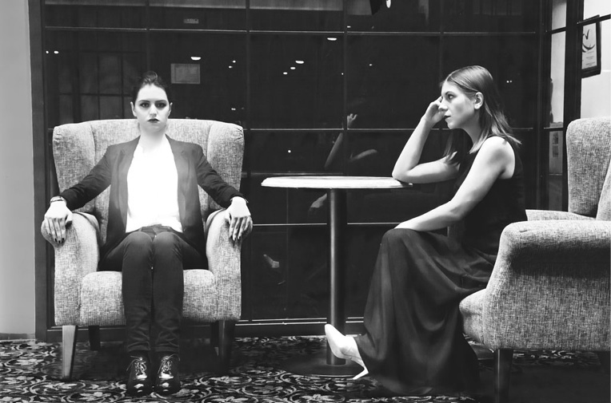
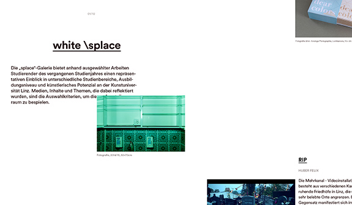

Centrefold-Video
Brainbows Karin Fisslthaler
Renowned alumni of the University of Art and Design Linz produce a work of art for wall hanging specially for splace. For this issue we invited the artist Karin Fisslthaler.
> read article

Logbook Karin Bruns & Gerhard Umhaller
Film Noir: media Explorations of the Night
A documentation about the wintry Helsinki and Tallinn
> read article
Lost in Hotel Heike Schnotale, Daniela Poschauko, Julia Romana Potocnik, Photoseries 2015, Photo: Heike Schnotale, Daniela Poschauko, Julia Romana Potocnik
Interview Ute Ploier
Fashion Is a Well-Told Story
On the shifting of viewing habits and the liberation of role models
> read article
Daily Way Home Katharina Diezl, Photo: Elfie Semotan das ende der welt, Marie Stoiser, 2014, Photo: Elfie Semotan bark, Miriam Kohlhofer, 2013 – 2014, Photo: Elfie Semotan
Fashion Is a Well-Told Story Theres Duschlbauer, Seth Rickard
Film Noir Barbara Perndl, Matthias Steinbauer

The white \splace gallery with selected works by students.
Team Issue 02 – Colour:
Sabine Kienzer (editorial management), Tina Frank, Marianne Pührerfellner, Matthias Steinbauer, Ismail Khalil, Lukas Leitner, Stefan Ehrenmüller, Elisabeth Egger-Mann, Katharina Mayrhofer, Nataša Sienčnik, Victoria Tanczos
Editorial office: Martina Aichhorn, Translation: Jonathan Quinn, Nataša Sienčnik, David Westacott
Authors
Sabine Kienzer, Karin Bruns, Gerhard Umhaller, Martin Reinhart, Helmut Lethen, Monika Wagner, the next ENTERprise - architects, Tina Frank, Ton Matton, Karin Harrasser, Gudrun Rath, Hubert Lobnig, Thomas Raab
Producers – Landscape Version:
Fashion Is a Well-Told Story Theres Duschlbauer, Seth Rickard
Film Noir Barbara Perndl, Matthias Steinbauer
A Difficult Birth Martin Ruprecht, Marjan Moradhasel, Michael Schinninger
The Stone Age of Evidence Hannes Rettenbacher, Matthias Steinbauer
Art History in Black and White Iryna Lubiana, Matthias Steinbauer
Why Do Architects Wear Black and Build in Grey and White? Zheng Xian, Michael Weingartner
Brainbows Karin Fisslthaler, Matthias Steinbauer
Anything is possible Tina Frank, Matthias Steinbauer
Doubt Marianne Pührerfellner, Sabine Pils, Matthias Steinbauer
Zombies RIP, Felix Huber, Video 2:30
Who’s afraid of Red and Blue Dominika Michalkova, Dominik Prilmüller
Meditation on Baker-Miller-Pink Wolfgang Hauer, Shahir Salama, Mostafa Aly"